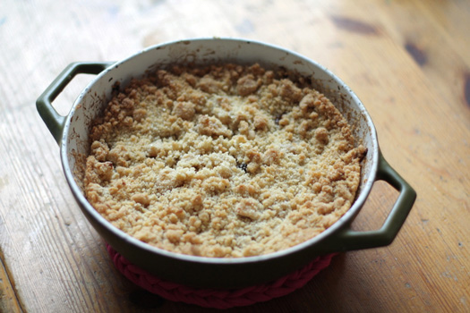

Apple Crumble
Home

Apple crumble - best dessert ever?
For the sweettooth out there, the apple crumble is an absolute must!
In this fast and easy guide, we will make the most delicious dessert there is.
Ingredients
Filling:
- 6 cups peeled and sliced apples
- 1/2 cup white sugar
- 1 tablespoon all/purpose flour
- 1 teaspoon ground cinnamon
- 1/4 teaspoon salt
Topping:
- 3/4 cup old-fashioned rolled oats
- 3/4 cup all-purpose flour
- 3/4 cup brown sugar
- 1/2 teaspoon baking soda
- 1/4 teaspoon baking powder
- 1/2 cup butter, melted
Steps
- Preheat oven to 350 degrees F (175 degrees C).
- Mix apples, white sugar, 1 tablespoon flour, cinnamon, and salt together in a bowl;
spread into an 8-inch square baking dish.
- Combine oats, 3/4 cup flour, brown sugar, baking soda, and baking powder together in
a separate bowl; add butter and mix until crumbly. Crumble topping evenly over apple
filling using your hands.
- Bake in the preheated oven until topping is lightly browned, 30 to 40 minutes.
- Enjoy!